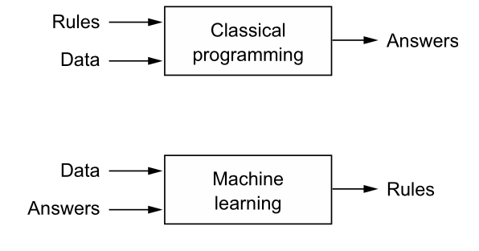
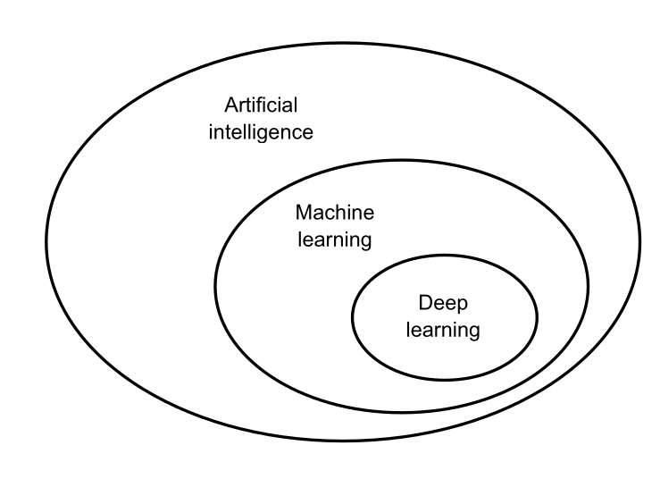
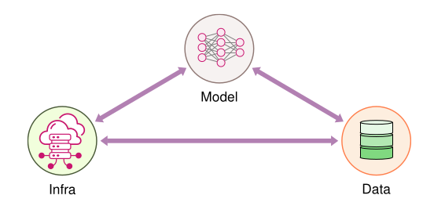

Introduction
What this lecture covers:**
- How ML systems differ from traditional software systems
- How we arrived at the current paradigm of AI
- The three pillars every ML system stands on: data, algorithms, infrastructure
- The Bitter Lesson — and what it means for how we build systems today
Software Engineering systems vs Machine Learning systems

In traditional programming, a human writes explicit rules:
Data + Rules → Program → Answers
In machine learning, we invert the process — the machine derives the rules from examples:
Data + Answers → Training → Rules (Model)
This inversion has deep consequences for how the resulting systems behave:
| Aspect | Software Engineering | Machine Learning Systems |
|---|---|---|
| Logic | Written explicitly by humans | Learned from data |
| Correctness | Deterministic; testable against a spec | Statistical; evaluated against metrics (accuracy, precision, recall) |
| Failure mode | Crashes, exceptions — loud failures | Silent degradation — the system keeps running but predictions get worse |
| Source of truth | The code | The code and the data and the model |
| Change over time | Behaves the same until code changes | Degrades as the world drifts away from the training data |
| Debugging | Stack traces, breakpoints | Data audits, error analysis, ablations |
| Versioning | Version the code | Version code + data + model + hyperparameters |
Key takeaway: in ML systems, data is code. A bug can live in the dataset, in a feature pipeline, or in a stale model — not just in the source files. Testing, monitoring, and deployment practices must all be rethought accordingly.
Evolution of AI

AI has evolved through distinct eras, each one arising to fix the limitations of the last — and each one delegating more of the work to data and computation.
1. Symbolic AI (1956 – mid-1970s)
- Born at the Dartmouth Conference (1956), where McCarthy, Minsky, Rochester, and Shannon coined the term "artificial intelligence." Core assumption: intelligence = symbol manipulation.
- STUDENT (1964) solved algebra word problems by parsing English into equations; ELIZA (1966) simulated conversation via pattern matching and substitution — no learning, no data, running on 256KB mainframes.
- Fatal flaw — brittleness: these systems only handled inputs that exactly matched their pre-programmed patterns. Any minor variation broke them completely, so deployment beyond the lab was infeasible.
- Systems footnote: the Dartmouth pioneers underestimated the resources intelligence requires by roughly a million-fold — they assumed 1950s hardware (≤64KB memory) would suffice; modern models need hundreds of GB and exaflops of compute. Algorithmic cleverness alone was never going to be enough.
2. Expert Systems (mid-1970s – 1980s)
- The field retreated from "general AI" to capturing expert knowledge in narrow domains.
- MYCIN (Stanford, 1975) diagnosed blood infections with ~600 hand-written IF-THEN rules carrying certainty factors.
- Three problems it exposed that still haunt ML today:
- Knowledge capture — experts often can't articulate how they decide
- Uncertainty handling — rules cope poorly with incomplete information
- Maintenance — new rules conflicted with old ones as the rule base grew
3. Statistical Learning (1990s)
- Shift from hand-coded rules to learning patterns from data, enabled by three converging factors: the digital revolution (data), Moore's law (compute), and new algorithms (SVMs, improved neural networks).
- Canonical example — spam filtering: instead of writing
IF contains("viagra") THEN spam(easily evaded), learn from thousands of examples that certain words appear in 90% of spam but 1% of normal mail, and combine the evidence with Naive Bayes:P(spam|word) = P(word|spam) × P(spam) / P(word) - Three concepts introduced here remain central to all of ML:
- Training data quality/quantity matters as much as the algorithm
- Rigorous evaluation metrics are needed to measure and compare systems
- Precision vs recall trade-offs must be chosen per application (a spam filter tolerates some spam; a medical screen must not miss cases)
4. Shallow Learning (2000s)
- One or two processing layers ("shallow" vs deep): decision trees (interpretable, tiny footprint), k-NN, linear/logistic regression, and SVMs with the kernel trick (project data into higher dimensions where classes become linearly separable).
- The recipe was hybrid: human-engineered features + statistical learner. A 2005 computer-vision pipeline: extract SIFT/HOG features by hand → select features → train an SVM → post-process.
- Strengths: solid mathematical foundations, worked with limited data, computationally cheap, reproducible.
- Viola-Jones face detection (2001): simple rectangular features + a cascade of classifiers that rejects easy negatives early — real-time detection (24 fps) on 2001 hardware, powering digital-camera face detection for a decade. An early masterclass in algorithm–hardware co-design.
5. Deep Learning (2012 –)
- Instead of hand-engineering features, stack layers of simple units that learn increasingly abstract representations: edges → shapes/textures → parts (whiskers, ears) → concepts ("cat").
- AlexNet (ImageNet 2012) was the watershed: trained on two GTX 580 GPUs (60M parameters, ~6 days, ~1,287 GPU-hours), it scored 15.3% top-5 error vs 26.2% for the runner-up — a 42% relative improvement.
- The ideas were old — Rosenblatt's perceptron (1957), backpropagation (1986), LeCun's digit recognition (1989) — but they stagnated for decades because three ingredients were missing: enough data, enough compute, and training techniques for deep networks. 2012 was a convergence, not a sudden invention.
- The breakthrough was as much systems engineering as algorithms: GPU parallelism, memory-bandwidth-aware design, and frameworks (Theano and successors) providing automatic differentiation at scale.
6. Foundation Models (2018 –)
- Scale exploded: GPT-3 (2020) has 175B parameters (~350GB), a 500x jump over BERT-Large (340M, 2018), trained on 1,024 V100 GPUs over weeks at an estimated $4.6M cost.
- Emergent abilities appeared from scale alone — fluent text, conversation, code generation — not from explicit programming.
- Systems challenges now dominate: distributed training across thousands of GPUs, serving 100GB+ models to millions of users at sub-second latency, and datasets so large (LAION-5B: ~240TB) that data loading itself becomes a distributed-systems problem. Hence model-as-a-service: providers like OpenAI serve APIs instead of shipping models.
The arc of the story
| Symbolic AI | Expert Systems | Statistical Learning | Shallow / Deep Learning | |
|---|---|---|---|---|
| Key strength | Logical reasoning | Domain expertise | Versatility | Pattern recognition |
| Data needed | Minimal | Expert knowledge | Moderate | Large-scale |
| Adaptability | Fixed rules | Domain-specific | Cross-domain | Highly adaptable |
| Problem complexity | Simple, logic-based | Complicated, domain-specific | Complex, structured | Highly complex, unstructured |
Two takeaways:
- Hand-coded intelligence → learned intelligence. Each era replaced more human-encoded knowledge with patterns learned from data — trading brittleness for flexibility, and computational simplicity (ELIZA on 256KB) for infrastructure intensity (GPT-3's GPU fleets).
- Every major advance required an algorithmic breakthrough AND a systems breakthrough. Perceptrons waited 50 years for their hardware; AlexNet needed GPUs and autograd frameworks; GPT-3 needed distributed training infrastructure. That pairing — and the engineering discipline it demands — is exactly what this course is about.
Machine learning systems
Machine Learning Systems are integrated computing systems comprising three interdependent components:
- data that guides behavior,
- algorithms that learn patterns, and
- computational infrastructure that enables both
training and inference.

1. Data
- Collection, labelling, cleaning, versioning
- Feature pipelines and feature stores
- Quality: garbage in → garbage out, at scale
- Drift: the world changes; your training set doesn't
2. Algorithms
- Model selection, training, and tuning
- Evaluation: offline metrics vs online (business) metrics
- Trade-offs: accuracy vs latency vs interpretability vs cost
3. Infrastructure
- Compute for training (GPUs/TPUs, distributed training)
- Serving: batch vs online inference, latency budgets
- Orchestration, CI/CD for models, experiment tracking
- Monitoring and observability in production
A system is only as strong as its weakest pillar. A state-of-the-art model on bad data is useless; a great model that can't be served within the latency budget never ships.
Most academic ML focuses on the algorithms pillar. Most industry effort — and most of this course — lives in the other two.
The Bitter Lesson
In his 2019 essay, Rich Sutton looked back at 70 years of AI research and drew a provocative conclusion:
General methods that leverage computation are ultimately the most effective, and by a large margin.
The recurring story:
- Researchers build in human knowledge — hand-crafted rules, features, heuristics. It helps in the short term.
- Approaches based on search and learning, scaled with more compute and data, eventually win — decisively.
- The human-knowledge approach, once beaten, turns out to have been a ceiling, not a foundation.
30 years of the Bitter Lesson in NLP
The same pattern has repeated roughly every 3–4 years:
| Era | The "human knowledge" approach | The "compute + data" winner |
|---|---|---|
| 1990s | Rule-based machine translation (SYSTRAN): linguists hand-wrote grammar and transfer rules for decades | Statistical MT (IBM's Candide, early 1990s): learn word alignments from millions of sentence pairs of parallel parliamentary text — no linguist needed |
| 2000s | Feature-engineered NLP: every task needed dozens of hand-crafted features (isCapitalized, gazetteers, POS tags…) |
Word2Vec (2013) / GloVe (2014): predict neighboring words on billions of tokens; representations learn themselves |
| 2010s | Task-specific architectures: tree-LSTMs for parsing, CRFs for NER, custom attention for QA | Transformer (2017): one general architecture + scale displaced them within a few years |
| 2020s | Domain-specific pretraining: BloombergGPT, Galactica, BioGPT, LegalBERT | GPT-4-class general models: train on everything, then prompt or RAG — match or beat domain models on most of their own benchmarks |
| Now | Fine-tune per task with thousands of labeled examples | Instruction tuning + RLHF: one general model handles many tasks from a few examples in the prompt |
Case study: BloombergGPT vs GPT-4 (both March 2023)
- BloombergGPT — the domain expert bet: 50B parameters trained from scratch on a ~700B-token corpus, roughly half curated financial data (news, filings, Bloomberg data) and half general text. "Finance is special; bake the knowledge in."
- GPT-4 — the bitter lesson bet: general model trained on essentially everything, no financial knowledge deliberately baked in. Just prompt it: "You are a financial analyst. Here are 10 SEC filings…"
Outcome: In its own paper, BloombergGPT clearly beat similarly-sized general models (GPT-NeoX, OPT-66B, BLOOM-176B) on financial benchmarks — the domain bet worked against its peers. But an independent follow-up study (Li et al. 2023) found BloombergGPT performed only about as well as zero-shot ChatGPT and below GPT-4 on most financial tasks — a general model with no financial pretraining and no access to Bloomberg's data.
Why the general model won:
- Generalization + scale beat specialization — GPT-4 read vastly more text (including plenty of public finance) and found the patterns itself.
- Compute beat curation effort — millions spent curating a finance corpus lost to more compute on a general model.
- Maintenance — financial knowledge changes; a specialized model goes stale, while a general model + retrieval can be fed tomorrow's 10-K filings tomorrow.
The nuance — when specialized still wins:
- Domain-heavy tasks — the same study found GPT-4 still lagged on financial NER and some sentiment tasks, where domain-specific knowledge matters most
- Data privacy — client data that can't leave the building favors an on-prem specialized model
- Cost & latency — a 50B model is far cheaper to serve than a frontier model for thousands of internal queries per day
So the lesson is not "specialized models are useless" — it's that given enough compute and general data, the general model usually wins.
What it means for ML system engineers
- Domain knowledge isn't useless — hard-coding it into the model is what loses. Let the model learn from data, and supply domain knowledge at runtime via RAG and tools instead of baking it into weights.
- Don't over-invest in hand-tuned heuristics that the next scale-up replaces
- Do invest in what compounds with scale: data pipelines, evaluation harnesses, compute infrastructure
- The durable skill isn't a particular model architecture — it's the ability to build systems that can absorb the next wave of models
📖 Read the original: The Bitter Lesson — Rich Sutton (2019)
References & Further Reading
- Vijay Janapa Reddi, Machine Learning Systems — Chapter 1: Introduction
- Rich Sutton, The Bitter Lesson (2019)
- Chip Huyen, Designing Machine Learning Systems (O'Reilly, 2022)
- D. Sculley et al., Hidden Technical Debt in Machine Learning Systems (NeurIPS 2015)
- Andrej Karpathy, Software 2.0 (2017)